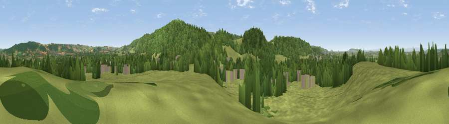

Viewpoint near Churchill
#21894 in England · top 46% of its area beats it · near Churchill · footpathWhere it is
The exact computed spot (ST 44425 60075). Click the marker for map links.
Public access: a public right of way passes within 22 m of this spot. Computed from Natural England's CRoW access layer and OpenStreetMap rights of way — not the legal definitive map. Always verify locally.
The view, rendered

A 360° render of this exact spot computed from the terrain model, tree cover and land cover — summer colours, afternoon light, calibrated against photographs of famous viewpoints. Real trees, hedges and buildings will differ in detail.
The panorama
Grey silhouette: terrain skyline in each direction (720 bearings, Earth curvature and refraction included). Dashed green: skyline with trees (+15 m) and buildings (+8 m) as obstacles. Blue strip: how far the ground is visible on each bearing.
Where the view opens
Wedge length = distance to the farthest visible ground on that bearing (vegetation-aware). Rings at 10, 25 and 50 km.
What fills the view
61% grassland · 31% woodland · 6% built-up · 1% cropland
Angular shares of the visible panorama (visual magnitude), not map area. Landscape diversity 0.39 (0–1 Shannon).
Key numbers
More beautiful places nearby
The staircase of upgrades: each row has a higher view potential than everything closer. Driving times are estimates from straight-line distance, calibrated against real road routing — check an actual route before setting out.
| Place | Direction | Drive | Score |
|---|---|---|---|
| Viewpoint near Churchill | WNW · 0 km | ~1 min | 51.0 |
| Viewpoint near Congresbury | N · 4 km | ~10 min | 69.4 |
| Viewpoint near Axbridge | SSW · 5 km | ~11 min | 79.2 |
| Beacon Batch | SE · 5 km | ~11 min | 79.4 |
| Bleadon Hill [Loxton Hill] | WSW · 8 km | ~17 min | 79.6 |
| Viewpoint near Holford | SW · 35 km | ~53 min | 80.8 |
| Viewpoint near Holford | SW · 35 km | ~53 min | 82.2 |
| Viewpoint near Holford | WSW · 36 km | ~54 min | 85.9 |
51.33703, -2.79917 · source: screening · position refined by local search. Computed location — check access rights before visiting.